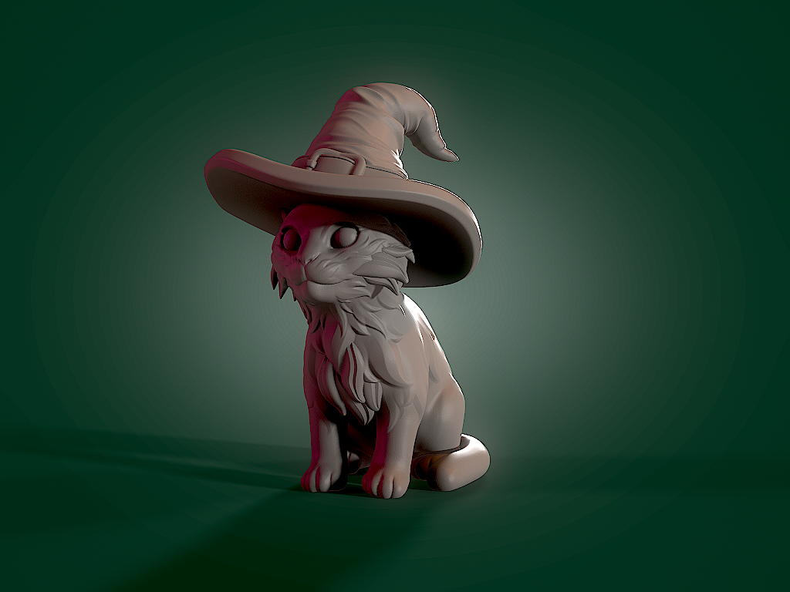

HTML - это обычный, текстового вида файл, в котором то, что мы обычно видим на страничках, перемежается невидимым для просмотра из браузера кодом. Вот этот-то невидимый код и есть язык разметки HTML.
HTML - это не язык программирования, - он служит лишь для разметки странички, придания определенного вида тому или иному элементу, будь то таблица, текст или картинки.
Параметры отображения элементов задаются при помощи тегов, в которых и задается желаемый вид того или иного элемента нашей странички.
